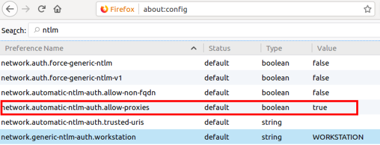
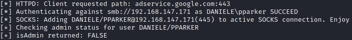
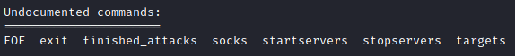
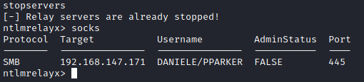

2. Exploiting WPAD
If is not possible use the exploit seen here(
WPAD
Spoofing/Poisoning for Capture credentials) because of the vulnerability is been patched with the
MS16-077(of
2016) and the WPAD is now requested only via DNS, we can use this attack via IPv6.
As soon as the
victim machine has set the attacker as IPv6 DNS server(
we
have already done at point1), it will start querying for the WPAD configuration of the network. Since these
DNS queries are sent to the attacker, it can just reply with its own IP address (either IPv4 or IPv6 depending on
what the victim’s machine asks for). This also works if the organization is already using a WPAD file (though in
this case it will break any connections from reaching the internet).
To bypass the second protection,
where credentials are no longer provided by default, we need to do a little more work. When the victim requests a
WPAD file we won’t request authentication, but instead provide it with a valid WPAD file where the attacker’s
machine is set as a proxy. When the victim now runs any application that uses the Windows API to connect to the
internet or simply starts browsing the web, it will use the attackers machine as a proxy. This works in Edge,
Internet Explorer, Firefox and Chrome, since they all respect the WPAD system settings by default.
Now when the
victim connects to our “proxy” server, which we can identify by the use of the
CONNECT HTTP verb, or
the presence of a full URI after the
GET verb, we reply with a HTTP 407 Proxy Authentication required.
This is different from the HTTP code normally used to request authentication, HTTP 401.
IE/Edge and Chrome
(which uses IEs settings) will automatically authenticate to the proxy, even on the latest Windows versions. In
Firefox this setting can be configured, but it is enabled by default.
Windows will now happily send the NTLM challenge/response to the attacker,
who can relay it to different services. With this relaying attack, the attacker can authenticate as the victim on
services, access information on websites and shares, and if the victim has enough privileges, the attacker can even
execute code on computers or even take over the entire Windows Domain. Some of the possibilities of NTLM relaying
were explained in one of our previous blogs, which can be found
here.
START:


